2.2.1 Instalación y configuración de WireGuard
1. Recursos necesarios y escenario
- Máquina virtual con ubuntu server 20.04.
- Smartphone Iphone 6S.
- Máquina virtual con ubuntu desktop 20.04.
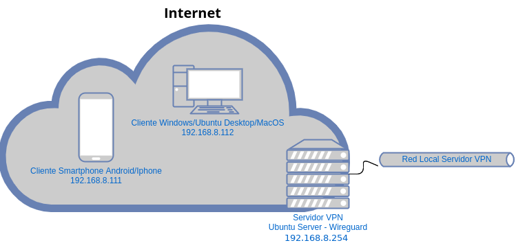
2.Instalar el servidor VPN WireGuard
Para instalar wireguard en ubuntu server 20.04 el comando es el siguiente:
root@wireguard:/#apt install wireguard
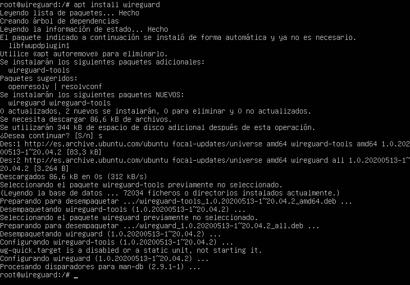
3. Generar las claves del servidor
El servidor necesita una clave privada y otra pública para funcionar, así que hay que generarlas. En primer lugar se crea el directorio keys para guardar las claves.
root@wireguard:/#mkdir -p /etc/wireguard/keys
Una vez creado el directorio donde se almacenarán las claves, el siguiente paso es generar una clave pública y privada para el servidor. Para ello, se accede al /etc/wireguard/keys y se ejecuta el comando para generar las claves donde la clave privada se guardará en el fichero server.key y la publica en el server.key.pub.
root@wireguard:/#cd /etc/wireguard/keys
root@wireguard:/#wg genkey | tee server.key | wg pubkey > server.key.pub
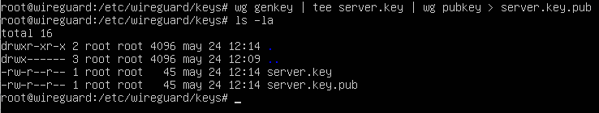
En la 2ª tubería, el comando wg pubkey recibe una clave privada por la entrada estándar y genera su clave pública asociada. En este caso, genera una clave pública de la clave privada server.key que se genera previamente con wg genkey | tee server.key.
Ya se tiene las claves necesarias generadas. Se pueden ver las claves ejecutando el comando cat:
root@wireguard:/#cat server.key
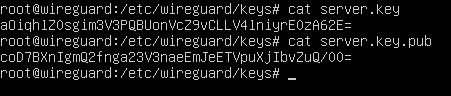
A continuación, hay que cambiar los permisos lectura/escritura para el usuario root en los ficheros de claves, para asegurar que solamente el usuario root pueda acceder a las claves.
root@wireguard:/#chmod 600 server*
4. Determinar la interfaz por la que se va a enrutar
Es necesario conocer el nombre de la interfaz que se quiere enrutar a través del túnel, ya que se tiene que añadir en el fichero de configuración. Si el servidor se conecta a Internet a través de la misma interfaz que a su red local, el siguiente comando obtendrá la interfaz:
root@wireguard:/#ip -o -4 route show to default | awk '{print $5}'
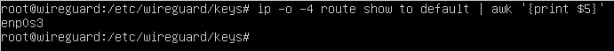
Para este caso, la interfaz es la enp0s3.
En el caso que el servidor se conecte a Internet usando una interfaz distinta a la interfaz a través de la cual se conecta a la red privada a la que se quiere que acceda el cliente VPN, hay que obtener el nombre analizando todas las interfaces que aparecen ejecutando el comando:
root@wireguard:/#ip add
La interfaz de la red local será aquella que tenga configurada una IP del rango de la red privada.
5. Configurar la interfaz para WireGuard
WireGuard funciona añadiendo una interfaz de red al servidor, que es la que utilizará el túnel VPN. Para este caso, se le llamará wg0. A continuación, se crea el fichero wg0.conf con permisos lectura/escritura para el usuario root y se añade el contenido de la clave privada ya que será el valor del campo PrivateKey del fichero.
root@wireguard:/etc/wireguard#touch wg0.conf
root@wireguard:/etc/wireguard#chmod 600 wg0.conf
root@wireguard:/etc/wireguard#cat keys/server.key >> wg0.conf
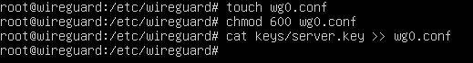
5.1 Edición del fichero de configuración
Una vez creado el fichero con los permisos y el valor de la clave privada, hay que acceder al archivo de configuración wg0.conf en modo edición para añadir el siguiente contenido:
[Interface]
Address = 192.168.8.254/24
PrivateKey = [contenido del fichero server.key]
ListenPort = 15000
PostUp = iptables -A FORWARD -i wg0 -j ACCEPT; iptables -A FORWARD -o wg0 -j ACCEPT; iptables -t nat -A POSTROUTING -o Nombre_Interfaz_Internet -j MASQUERADE
PostDown = iptables -D FORWARD -i wg0 -j ACCEPT; iptables -D FORWARD -o wg0 -j ACCEPT; iptables -t nat -D POSTROUTING -o Nombre_Interfaz_Internet -j MASQUERADE
donde,
- Address: dirección IP y máscara de la interfaz virtual de red del servidor VPN. La IP es la que se tendrá configurada la interfaz wg0 para la conexión VPN. Los clientes VPN que se conecten posteriormente, deberán tener en la interfaz de túnel VPN que se configure, una IP de la misma red.
- ListenPort: Puerto a través del cual escuchará el servicio de WireGuard en el servidor. Por defecto es el 51820 pero por seguridad, se usa un puerto no conocido como el 15000. De esta forma, no se podrá realizar una correspondencia del puerto con el servicio al que está a la escucha. Para enumerar el puerto a uno no conocido, hay que consultar el fichero services para no repetir uno ya existente, es decir, para este caso, se consulta el 26964. Como se puede observar en la salida del cat, el puerto 15000 no se utiliza por lo que se puede usar.
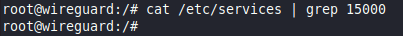.
- PrivateKey: lo que haya insertado el comando cat server.key >> wg0.conf.
- PostUp u PostDown: Nombre_Interfaz_Internet. En este caso sería enp0s3.
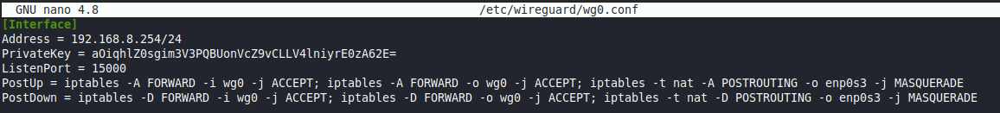
6. Puesta en marcha
Para poner en marcha el servicio (levantar la interfaz wg0 recién creada) se tiene dos posibilidades:
root@wireguard:/etc/wireguard#wg-quick up wg0
o
root@wireguard:/etc/wireguard#systemctl start wg-quick@wg0
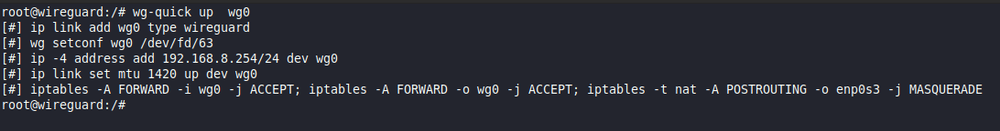
Se puede comprobar el estado de la interfaz con el siguiente comando:
root@wireguard:/etc/wireguard#wg show wg0
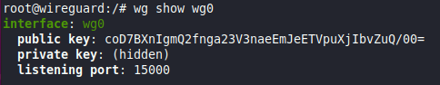
7. Iniciar la interfaz de WireGuard automáticamente al arrancar
Para iniciar la interfaz WireGuard cada vez que se encienda el servidor, el comando es el siguiente:
root@wireguard:/etc/wireguard#systemctl enable wg-quick@wg0
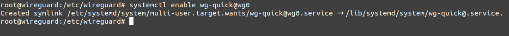
8. Configurando el tráfico de red y el cortafuegos
8.1 Permitir el reenvío de tráfico
Para que WireGuard pueda reenviar los paquetes entre interfaces, es necesario habilitar la opción. Para ello, hay que abrir el archivo sysctl.conf en modo edición:
root@wireguard:/etc/wireguard#nano /etc/sysctl.conf
Hay que buscar la línea net.ipv4.ip_forward=1 y descomentarla (borrar la almohadilla (#) que tiene delante). Después se guarda el archivo y se aplican los cambios ejecutando el siguiente comando:
root@wireguard:/etc/wireguard#sysctl -p
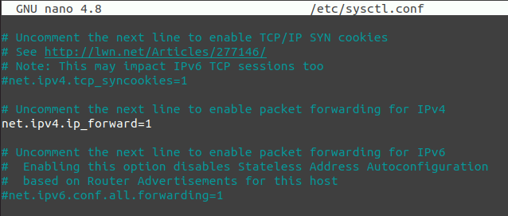 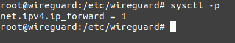
9. Abrir el puerto de WireGuard y activar el cortafuegos (opcional)
Si no se tiene el cortafuegos por defecto activado en el servidor, no es necesario realizar estos pasos. Sin embargo, es recomendable abrir solamente los puertos que vayan a utilizarse por seguridad. Para abrir el puerto de escucha para WireGuard que se ha configurado, hay que ejecutar el siguiente comando:
root@wireguard:/#ufw allow 15000/udp
Si se está accediendo por SSH, también hay que abrir el puerto que se esté utilizando. Por defecto es el puerto 22:
root@wireguard:/#ufw allow 22/tcp
Una vez aplicadas las reglas, ya se puede activar el cortafuegos:
root@wireguard:/#ufw enable
Se puede comprobar que está funcionando con las reglas correctas ejecutando el comando:
root@wireguard:/#ufw status verbose
Si en la red local del servidor hay otros cortafuegos en la ruta de acceso a Internet, también hay que abrir el puerto de escucha de WireGuard en ellos. De la misma forma, en el caso de que el servidor no tenga una IP pública, hay que configurar el reenvío de puerto necesario.
10. Añadiendo clientes
Una vez ya se tiene el servidor preparado para funcionar, solamente faltan añadir los clientes que se desean conectar. Si ya se tiene disponible la clave pública de un cliente al que se le quiere permitir la conexión y la IP que se le va a proporcionar, en el servidor hay que ejecutar el siguiente comando para añadir un cliente al servicio wg0:
root@wireguard:/#wg set wg0 peer [Clave_publica_cliente] allowed-ips [IP_Cliente_VPN]
donde,
- Clave_publica_cliente: Es la clave pública del cliente.
- IP_Cliente_VPN: IP que se desea proporcionar al cliente en la conexión VPN. La IP debe pertenecer a la misma red que la IP que se le ha puesto al servidor en la directiva Address de la configuración, en este caso 192.168.8.111).
10.1 Comprobaciones
Para comprobar que se ha añadido correctamente:
root@wireguard:/#wg show wg0
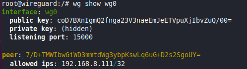
Para que nos muestre solo las claves públicas con las IPs de los peers:
root@wireguard:/#wg show wg0 allowed-ips
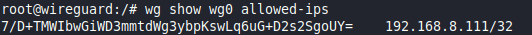
Para mostrar las conexiones TCP/UDP en escucha, el comando es el siguiente:
root@wireguard:/#netstat -tulpn
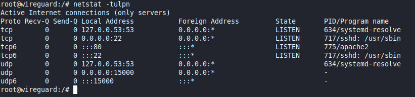
donde,
- t – Habilita la lista de puertos TCP.
- u – Habilita la lista de puertos UDP.
- l – Imprime solo tomas de escucha.
- n – Muestra el número de puerto.
- p – Muestra el nombre del proceso / programa.
Como se observa en la figura, el puerto udp 15000 (wireguard) está preparado aunque no tiene conexiones (por el momento).
11. Script WireGuard
Obra publicada con Licencia Creative Commons Reconocimiento No comercial Compartir igual 4.0